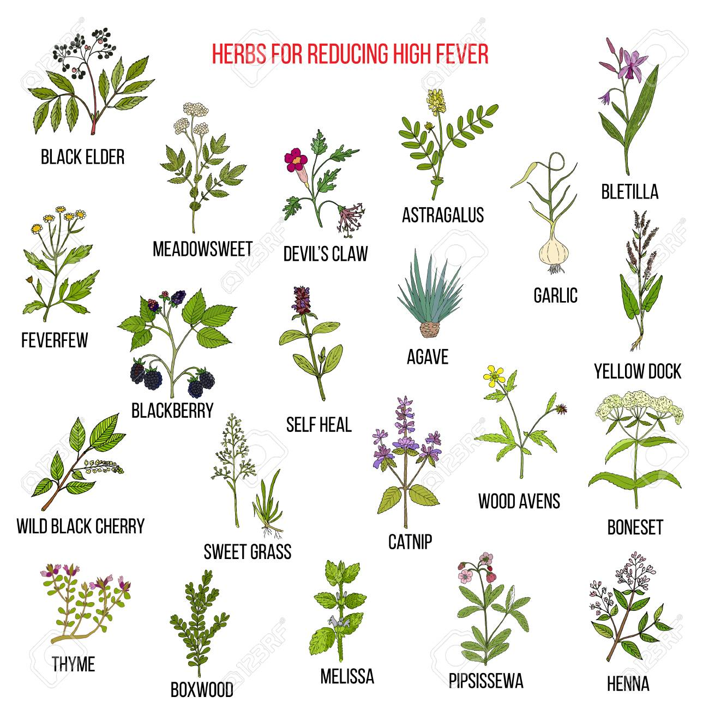

Introduction
Welcome to our website dedicated to the fascinating world of forest resources. Forests are not just beautiful landscapes but also a vital source of various natural treasures. In this comprehensive guide, we will explore the diverse range of resources that forests offer and their importance for our environment, economy, and well-being.
Timber and Lumber
Forests provide an abundant source of timber, which is a versatile material used in construction, furniture making, paper production, and more. Sustainable forestry practices are crucial to prevent overexploitation. Sustainable logging techniques include selective cutting, clear-cutting with reforestation, and responsible management to ensure that timber resources are renewed over time.
Medicinal Plants and Herbs
Forests are treasure troves of medicinal plants and herbs, offering remedies for various ailments. For example, the bark of the cinchona tree contains quinine, which has been used to treat malaria. The Pacific yew tree's bark is the source of the cancer-fighting drug Taxol. Traditional healing systems, like Ayurveda and Traditional Chinese Medicine, rely on forest plants for a wide range of treatments.
Biodiversity
Forests are hotspots of biodiversity. They provide habitats for countless species, from insects to large mammals. Biodiversity is essential for ecosystem resilience and the balance of nature. Forests offer genetic diversity that can be valuable for crop breeding and the development of new medicines. The loss of forests can lead to the extinction of many unique species.
Clean Water and Air
Forests play a significant role in maintaining clean water and air. Trees absorb carbon dioxide during photosynthesis and release oxygen, helping to combat climate change and improve air quality. Forests act as natural filters, trapping pollutants and purifying water that flows into rivers and streams. They also reduce the risk of soil erosion, preserving the quality of our water bodies.

Recreational Opportunities
Forests offer a wide range of recreational opportunities. Hiking and camping in the wilderness provide a chance to connect with nature and escape the hustle and bustle of urban life. Birdwatching enthusiasts can spot a diverse range of bird species, while wildlife photographers can capture the beauty of animals in their natural habitat. Forests provide a peaceful retreat for people seeking tranquility.
Indigenous and Cultural Significance
Forests hold profound cultural and spiritual significance for many indigenous communities. These lands are often considered sacred and are integral to their traditional practices and belief systems. Indigenous knowledge of forest resources, including medicinal plants and sustainable land management, has been passed down through generations and is of great value for understanding sustainable resource use.